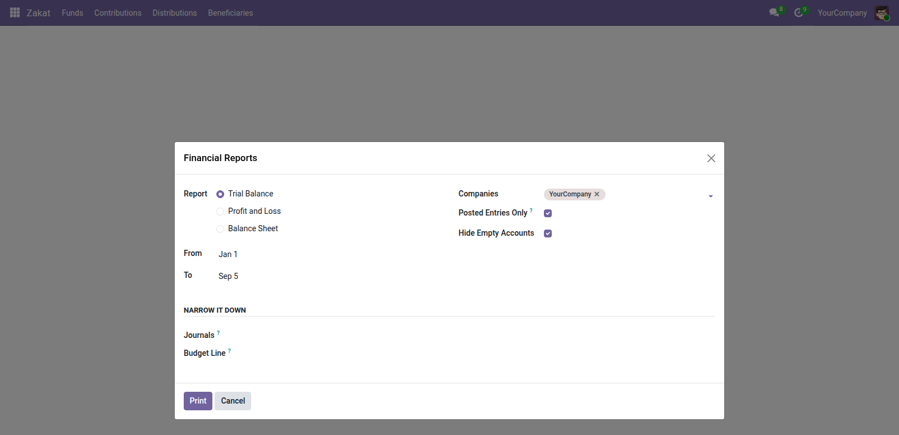

<section style="padding:32px 0;font-family:Roboto,Helvetica,Arial,sans-serif;color:#2b3a34;">
  <div style="max-width:900px;margin:0 auto;padding:0 24px;">

    <p style="font-size:12px;letter-spacing:.14em;text-transform:uppercase;color:#0b6b57;font-weight:600;margin:0 0 10px;">Accounting</p>
    <h1 style="font-size:40px;line-height:1.1;margin:0 0 14px;font-weight:700;">Financial Reports for Odoo Community</h1>
    <p style="font-size:19px;line-height:1.55;color:#4c5a55;max-width:640px;margin:0 0 28px;">Trial balance, profit and loss, and balance sheet — the three statements every accountant asks for first, and the three Community does not have.</p>

    <div style="background:#f6f7f5;border-left:3px solid #0b6b57;padding:18px 22px;margin:0 0 32px;font-size:16px;line-height:1.6;"><strong>Community gives you journal items and a chart of accounts, then stops.</strong> Odoo's dynamic reports are Enterprise, so a Community user who has to file accounts or hand something to an auditor has nothing to hand them.</div>

    <div style="margin:0 0 34px;">
      
      <div style="font-size:13px;color:#75837d;padding-top:8px;">The three statements Odoo Community does not have</div>
    </div>

    <h2 style="font-size:24px;margin:0 0 16px;font-weight:600;">The three statements</h2>
    <ul style="font-size:16px;line-height:1.7;color:#4c5a55;margin:0 0 30px;padding-left:20px;">
      <li><strong>Trial Balance</strong> — opening, movement and closing per account. Income and expense accounts show no opening figure, because they reset each financial year and a brought-forward number there would be wrong</li>
      <li><strong>Profit and Loss</strong> — grouped into operating income, other income, cost of revenue, operating expenses, depreciation and other expenses</li>
      <li><strong>Balance Sheet</strong> — as at a date, including the current period's result as equity</li>
    </ul>

    <h2 style="font-size:24px;margin:0 0 16px;font-weight:600;">Why the current result is on the balance sheet</h2>
    <p style="font-size:16px;line-height:1.65;color:#4c5a55;margin:0 0 14px;">That result is not sitting in an account until the year is closed. Leave it out and the sheet does not balance, which is the single most common thing wrong with a hand-built balance sheet.</p>
    <p style="font-size:16px;line-height:1.65;color:#4c5a55;margin:0 0 30px;">And if the two sides ever disagree anyway, the report says so in plain words rather than printing a total that looks authoritative and is not.</p>

    <h2 style="font-size:24px;margin:0 0 16px;font-weight:600;">Filters</h2>
    <table style="width:100%;border-collapse:collapse;margin:0 0 30px;font-size:15px;">
      <thead><tr style="background:#edf0ec;">
        <th style="text-align:left;padding:10px 14px;border-bottom:1px solid #dce1db;">Filter</th>
        <th style="text-align:left;padding:10px 14px;border-bottom:1px solid #dce1db;">Effect</th>
      </tr></thead>
      <tbody>
        <tr><td style="padding:9px 14px;border-bottom:1px solid #eef1ed;">Date range</td><td style="padding:9px 14px;border-bottom:1px solid #eef1ed;">any period, not just the fiscal year</td></tr>
        <tr><td style="padding:9px 14px;border-bottom:1px solid #eef1ed;">Journal</td><td style="padding:9px 14px;border-bottom:1px solid #eef1ed;">leave empty for all</td></tr>
        <tr><td style="padding:9px 14px;border-bottom:1px solid #eef1ed;">Company</td><td style="padding:9px 14px;border-bottom:1px solid #eef1ed;">one at a time, so the figures mean something</td></tr>
        <tr><td style="padding:9px 14px;border-bottom:1px solid #eef1ed;">Analytic account</td><td style="padding:9px 14px;border-bottom:1px solid #eef1ed;">restrict to entries carrying it — the donor-report question</td></tr>
        <tr><td style="padding:9px 14px;border-bottom:1px solid #eef1ed;">Posted entries only</td><td style="padding:9px 14px;border-bottom:1px solid #eef1ed;">on by default</td></tr>
      </tbody>
    </table>

    <h2 style="font-size:24px;margin:0 0 16px;font-weight:600;">Draft entries are labelled, not hidden</h2>
    <p style="font-size:16px;line-height:1.65;color:#4c5a55;margin:0 0 30px;">Turn posted-only off and the statement includes drafts — and prints <em>“Includes draft entries. Not suitable for filing.”</em> across it. A management figure and a filed figure are different things, and a report that does not say which it is will eventually be filed.</p>

    <div style="border-top:1px solid #dce1db;padding-top:20px;font-size:14px;color:#75837d;">Odoo 19.0 Community · depends on <code>account</code>. Prints through ordinary QWeb, so it exports to PDF like any other Odoo report.</div>

  </div>
</section>
